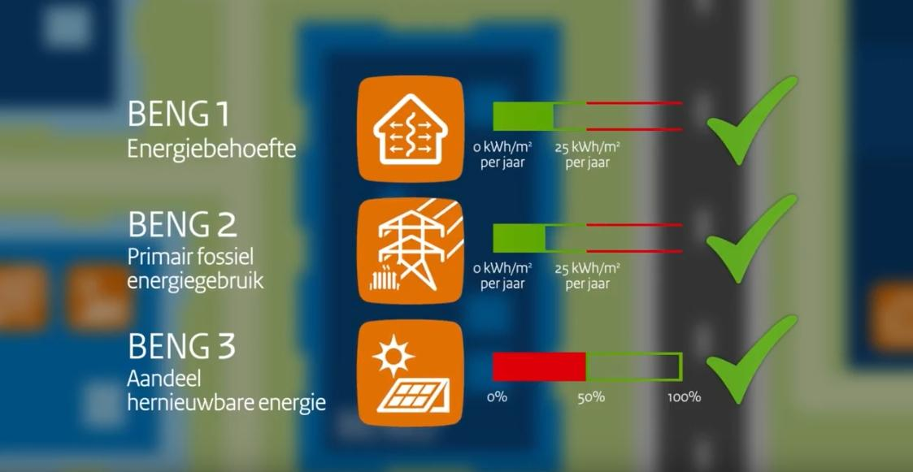
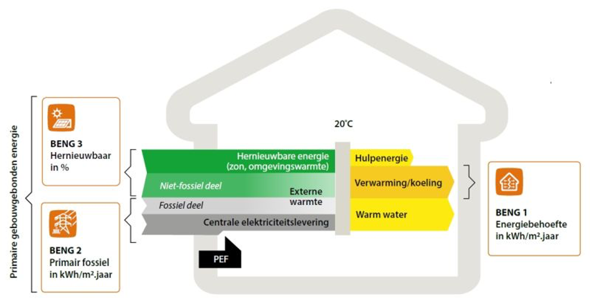

A Fortune 500 and S&P 500 company headquartered in Los Angeles, is the world’s largest commercial real estate services and investment firm.
On sustainability (no mention of climate change mitigation) - "We strongly believe that improving a property’s sustainability adds to its value. In addition to their intrinsic worth, sustainable solutions also enhance the appeal of a building, making it a favourable prospect for leases and sales in the long term. We are eager to team up with you to develop your sustainability strategy and take practical steps towards achieving your sustainability ambitions."
"We commit to realize 25% of the CO2 reductions for commercial real estate from the climate agreement with you, before 2030."
A huge project, how will this change the work of the Development Services department? Will it all come from your team? And who and how is measurement and reporting going to happen?
Outside-the-box solutions for property improvement, renovation, and redevelopment. Aimed at strengthening your image and adding to the value of your building.
For all new construction, both residential and non-residential, the permit applications must meet the requirements for Nearly Energy Neutral Buildings (BENG) from 1 January 2021.
How will this impact the work being done of the Development services team?
 
Anne Leeuw - Consultant Sustainability. Below are outcomes from thesis
Hannah Scott - Sustainability Strategist, Senior Consultant Development Services
Tim Habraken - Associate Director Sustainability
(Left)Work in facade technology company where I worked on tools to create our commercial proposals and setup Production department. (Right) visited PV supplier in China.
(Left) Worked in close collaboration with IGU manufacturers. (Right) Attended construction site to fix technical issues.
(Left) Helped lead strategy team to reevaluate company's business model. (Right) Completed certifications for 2 products.